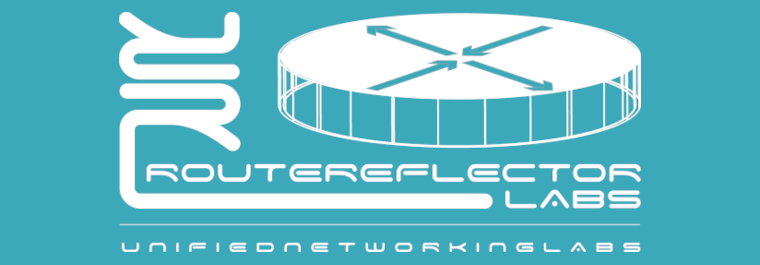

Lab modeling for UNetLab v3¶

We ran a series of field tests to check whether the idea we are working on is feasible and functional. The results are positive: the APIs support most of the key features (but not all).
Our next step is to define and model the data structure of the lab environment.
One of the main issues of UNetLab was that users had to build a lab manually, node by node, setting up interfaces, addresses and routing before getting a functional environment. We address this by introducing two states:
- HLL (High Level Lab): a rough outline of the lab in terms of nodes, links and features.
- LLL (Low Level Lab): a detailed lab generated from the HLL.
Below, we describe the data structure. Full examples are available in the UNetLab repository.
Nodes and Features¶
Here is an example with 4 VyOS nodes configured with a loopback and OSPF on all interfaces:
Features reference specific Ansible playbooks that configure each node. Variables can be passed with :. The nodes are named R1, R2, R3 and R4.
Topology¶
The 4 nodes can be connected in a full mesh:
Or in a custom topology:
You can also mix and match topologies:
topologies:
- type: full-mesh
match:
- Site1R
- type: full-mesh
match:
- Site2R
- type: defined
links:
- Site1R1, Site2R1
- Site1R2, Site2R2
Addressing¶
Addressing is defined like this:
ipv4_addresses:
- match: Loopback
address: 192.168.0.1/16
mask: 32
- match: Ethernet
address: 10.0.0.0/8
mask: auto
Addressing is configured interface by interface, using the first match. The subnet mask can be set manually or automatically. In the latter case, the interfaces are assigned as follows:
- Loopback interfaces get a
/32subnet. - Tunnel interfaces get a
/31subnet. - Ethernet interfaces get the smallest subnet needed to cover all the connected hosts.
To keep it simple, network allocation follows a sequential order based on the first available segment.
In the example above:
- Loopback interfaces get an address starting from the
192.168.0.1/32network. - Ethernet interfaces get an address starting from the
10.0.0.0network, with the smallest mask required for all the expected addresses.
Interfaces not involved in the topology are disabled.
From HLL to LLL¶
Once the user has defined the HLL, they can confirm it and generate the detailed topology (the LLL). Any change made to the HLL regenerates the LLL, overwriting any customizations. It will be possible to modify the LLL, which from that point on becomes the only relevant version.
Here is an example of what the LLL might look like:
lll:
groups:
- name: Nodes R (vyos-vyos)
template: vyos-vyos
match: R
features:
- loopback
- ospf:area=0
nodes:
- id: 6964F62C-0376-4ECF-8F03-E1FEADB94194
name: R1
interfaces:
Loopback0:
ipv4_address: 192.168.0.1/32
Ethernet1:
ipv4_address: 10.0.0.0/31
Ethernet2:
ipv4_address: 10.0.0.2/31
Ethernet3:
ipv4_address: 10.0.0.4/31
Links can be generated like this:
links:
- id: 9E510FC0-B9D6-459E-9EF0-9113607D2502
name: R1:Ethernet1 - R2:Ethernet1
interfaces:
- node_id: 6964F62C-0376-4ECF-8F03-E1FEADB94194
interface: Ethernet1
- node_id: 210827C6-9E59-4CCE-80AC-FD294DDC205E
interface: Ethernet1
Customizations¶
Once the LLL has been generated, the user can customize it without altering the HLL, which is preserved for historical reasons.
Each node can be modified individually or through a group, with node-specific settings taking priority over group settings.
Links can be customized in terms of bandwidth, delay and packet drop.
Management Network¶
The management network is mandatory: management interfaces are reserved and therefore not considered by the LLL.
Internet Connectivity¶
In this initial approach, we did not include Internet connectivity. We can imagine a special node that, once connected to the topology, enables Internet access.
Lab Interconnection¶
In this first version, we did not consider linking labs together. We can envision special shared links that allow multiple labs to interconnect.
Since each link references a virtual network, once a virtual network is defined it can be attached to all labs using its UUID.
Metadata¶
Any metadata describing the lab is grouped under a specific key:
Working on a Lab¶
When a user wants to work on a specific lab (run it or modify it), a copy with a unique UUID is created. Depending on the permissions, this copy can be read, modified or executed. The user always works on the instance copy and never on the original.
Based on the permissions, the user can save the copy by overwriting the original or by saving it as a new copy. Users running a copy do not see any changes unless they reload it from the original.
Closing a lab means deleting the instance copy and all the associated files.
To make node names editable, each node is assigned a UUID. Interface names are static and depend on the node type (template).